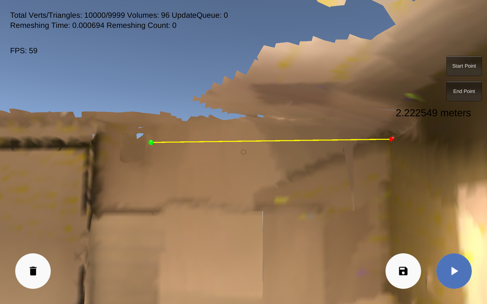
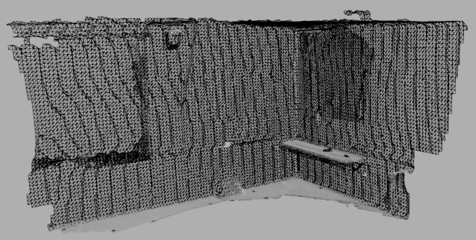

SPARTa is the product from a year-long senior design capstone project as a requirement for graduation from Penn State's Software Engineering program. It included a collaboration between Penn State and Erie Insurance to utilize Google's Project Tango to improve the insurance claims process. The system can spatially analyze and scan a claim, being able to capture measurements, images, and full 3D models of rooms, buildings, or automobiles. This requires less physical measurements from adjusters helping to automate the process.
The project followed multiple stages in the software process such as requirement gathering, design, development, and testing. The project involved working with experimental technology, testing in the field, and communicating with various engineers and analysts from Erie Insurance, Penn State, and Google.
 To Become a Henchling is a 2D top-down, rouge-like about a little girl and her quest to do evil. The game was developed using Unity and features cartoon-like vector art assets, lovable characters, linear story, and bears! The game is a part of Penn State Behrend's game development minor program.
test test test test
test test test test